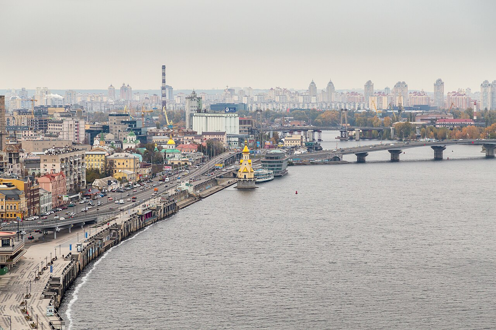

Мала енциклопедія
Світ стає ближчим,
коли цікаво.
Чотири короткі історії про міста, природу й космос. Читай у власному ритмі та відкривай знайоме по-новому.
Переглянути статті
Історія тижня МІСТО · 6 ХВ ЧИТАННЯ Київ — місто на берегах ДніпраДобірка знань
Знайди свою цікавинку
Нічого не знайшлося. Спробуй інший запит або тему.
Трохи про нас
Менше шуму.
Більше відкриттів.
«Виднокрай» — невеликий навчальний проєкт про цікаві місця, явища й ідеї. У цій версії є рівно чотири статті, написані простою мовою, та фотографії з відкритою ліцензією.